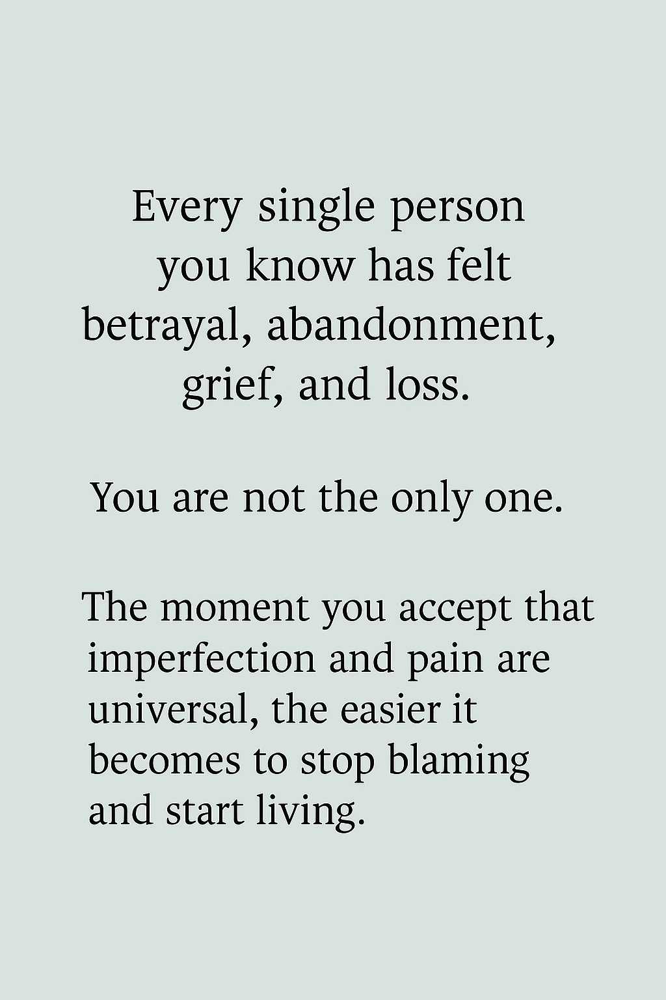

The problem
Isolation
Many people are holding grief, trauma, shame, burnout, or depression in private while longing for safe community.
This work exists because so many people are trying to survive emotional pain, trauma, and isolation without enough spaces that feel accessible, creative, and human.
Many people are holding grief, trauma, shame, burnout, or depression in private while longing for safe community.
Support can be too expensive, too clinical, or not the right fit for people who need softer and more creative pathways.
Finding Eden aims to create spaces where people can come as they are, be witnessed, and reconnect with themselves.
